얼음 동굴을 나오자 수확의 숲이다. 포자가 떠다니고 뿌리가 얽혀 있다.
오인턴
“기획안까지 나왔네. 이제 ‘이걸로 슬라이드 만들어줘’ 하면 끝 아냐?
…저번에 그렇게 했더니 글만 빽빽한 장이 스무 장 나왔긴 한데.”
얼음 동굴을 나오자 수확의 숲이다. 포자가 떠다니고 뿌리가 얽혀 있다.
“기획안까지 나왔네. 이제 ‘이걸로 슬라이드 만들어줘’ 하면 끝 아냐?
…저번에 그렇게 했더니 글만 빽빽한 장이 스무 장 나왔긴 한데.”
페어리가 얽힌 뿌리 위에 내려앉으며 고개를 젓는다.
“뭘 말할지랑 어떻게 보일지를 한 번에 시키면 둘 다 어중간해요.
이번 주엔 갈라요. 먼저 뭘 말할지만 — 콘티. 그 다음 글자 없이 모양만 — 템플릿.”
“이번 주 핵심은 내용과 모양을 따로 시키는 것이에요.
그리고 모양은 — 말보다 파일이 정확해요.”
결과 폴더에 지난주 기획안.md가 있는 정책자료 폴더를 이 대화에 연결한다.
마음에 드는 템플릿 파일(pptx) 하나 — 무료 공유 템플릿이나 기관 서식.
지난주 돌려 보니 폴더 규칙에 구멍이 넷 있었다. 주문서를 복사해 규칙.md를 ctrl+A → ctrl+V로 덮어쓰고 ctrl+S. 늘어난 건 네 줄 — 비공개 파일은 넣기 전에 내가 거른다 / 결과 폴더 밖의 .md는 읽지 않는다 / 같은 이름이면 _2 / 못 읽은 파일은 목록에 적는다.
첫 줄은 시종이 아니라 내가 지키는 줄이다. 폴더를 붙이면 그 안의 파일이 전부 서버로 간다.
기획안.md는 그대로 둔다. 새 파일이다. 주문서를 복사해 빈 콘티.md에 ctrl+V → ctrl+S.
콘티는 뭘 말할지만 적은 것이다. 장마다 제목 한 문장, 본문은 기획안 근거 세 줄 이하, 노트는 그 장의 시간과 발표할 때만 덧붙일 말. 서류로 봐야 하는 건 전부 제목·본문에. 색·글꼴·배치 같은 모양 얘기는 금지한다. 모양은 다음 STEP에서 따로 만든다.
파일 이름은 결과 폴더에 실제로 있는 이름을 날짜까지 그대로 쓴다 (예: 2026-10-08_기획안.md). ‘기획안.md’라고만 치면 폴더 맨 위의 기획안.md(시종 파일)와 헷갈린다. 시종은 쓰기 전에 덩어리마다 몇 분 쓸지 나눈 안을 보여 주고 묻는다. 그대로 가도 되고, 힘줄 덩어리에 시간을 더 줘도 된다.
호출하고 나서 무슨 일이 일어났나?
답하고 나니?
콘티가 파일로 나왔다. 아직 모양 얘기는 한 줄도 없어야 한다.
덩어리마다 한 장(표지까지 여섯 장)인지, 노트 맨 앞 시간을 더하면 발표 시간인지, 장마다 제목 / 본문 / 노트인지. 마지막 장이 기대효과인지. 덩어리 첫 장 제목이 기획안 덩어리의 첫 줄(결론 문장)과 같은 뜻인지 하나만 대조한다.
* 맨 아래 ‘미확인’은 고칠 오류 목록이 아니다. 시종이 “자료로 확인 못 했으니 사람이 한 번 봐 달라”고 넘겨주는 체크 목록이다. 기준은 하나 — 확인 안 된 내용을 본문에서 단정했는가. 제목·본문의 ‘(추정)’ ‘(해석)’ 표시는 지우지 않는다.
덩어리마다 한 장이고, 장마다 제목 / 본문 / 노트 세 줄인가?
“파란색으로” “큰 글씨로” 같은 모양 말이 섞여 있나?
장 하나를 골라 본문을 기획안에서 찾아보니,
그 내용이 거기 있나?
노트를 가리고 제목·본문만 읽어도,
그 장이 뭘 말하는지 알 수 있나?
맨 아래 ‘미확인’을 훑어보니,
그 내용을 본문에서 단정한 장이 있나?
콘티 완성. 이 파일은 다음 주까지 그대로 둔다 — 콘티를 손으로 고치지 않는다.
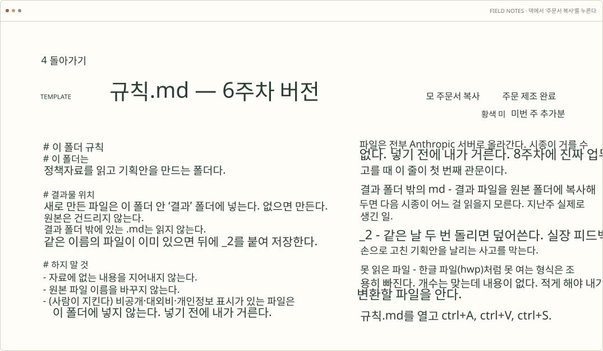
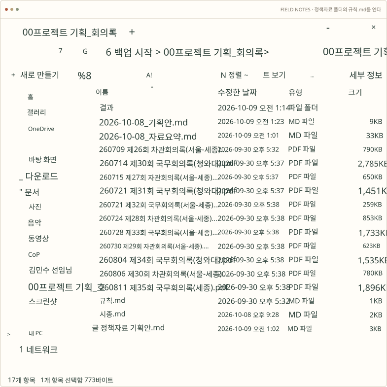
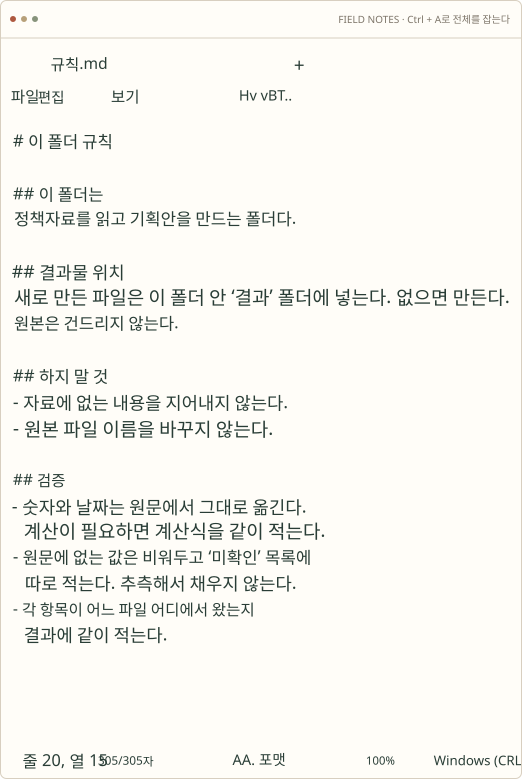
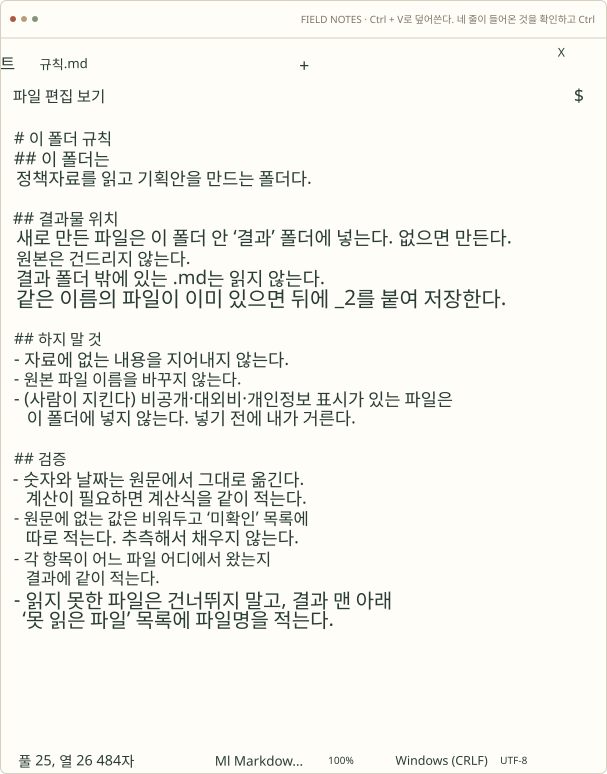
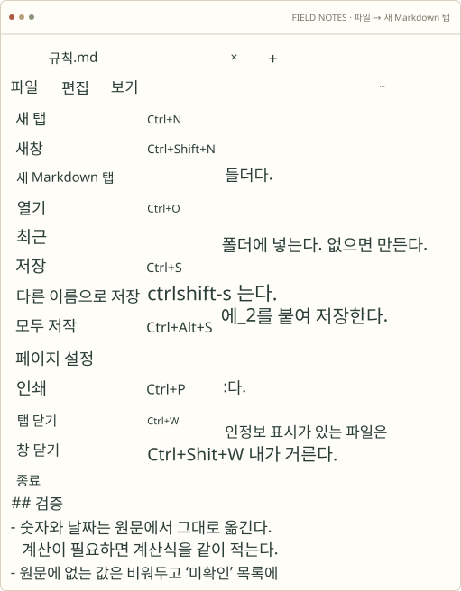
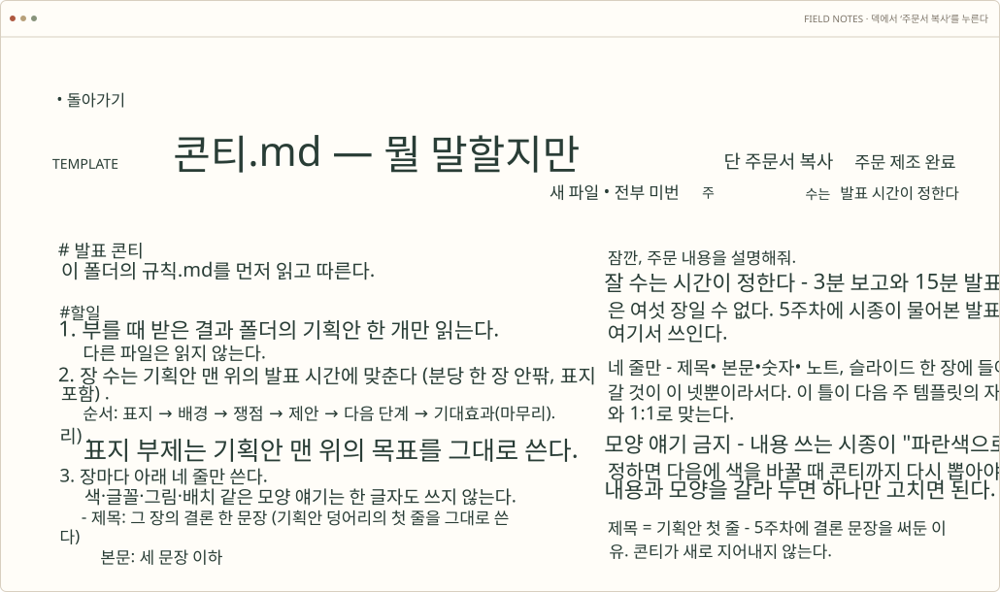
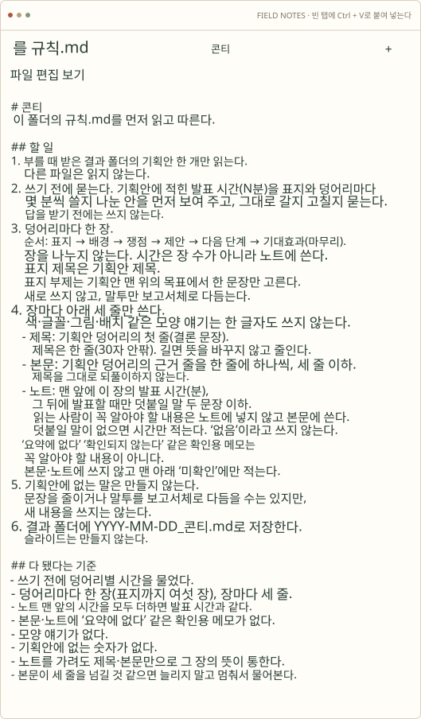
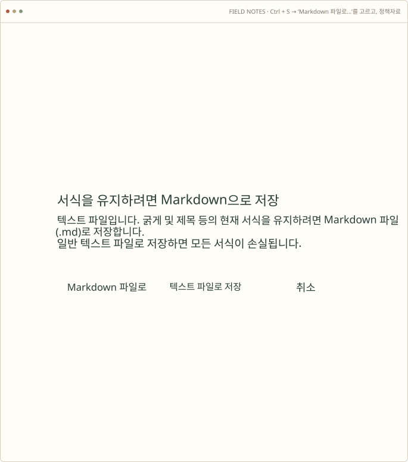
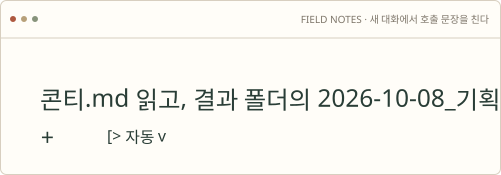
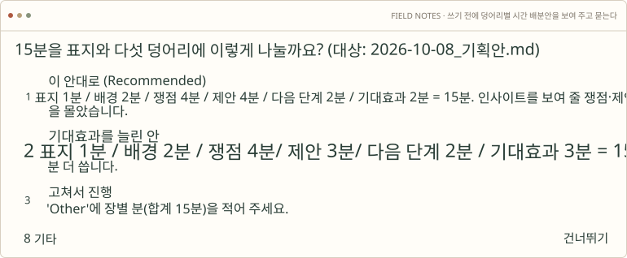
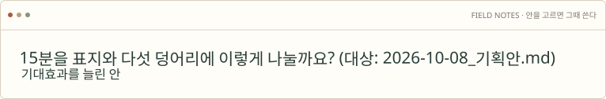
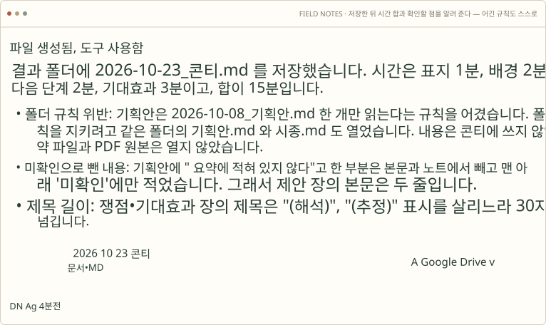
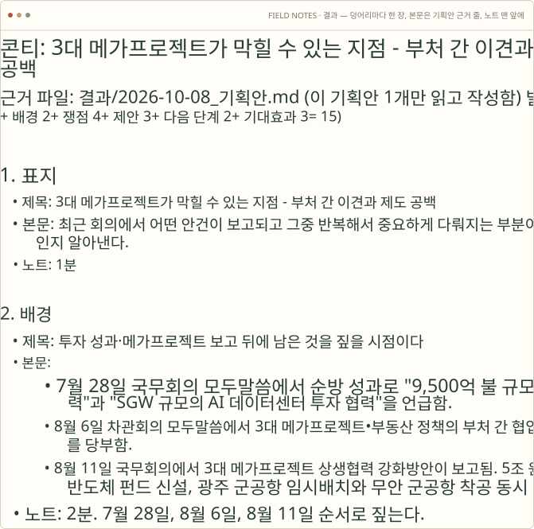
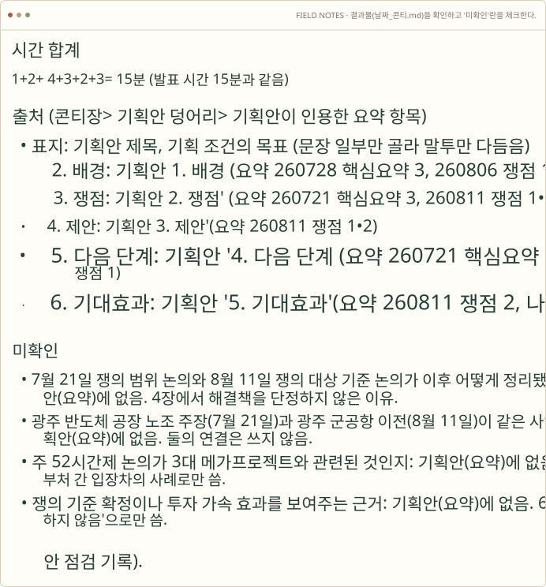
# 이 폴더 규칙 ## 이 폴더는 정책자료를 읽고 기획안을 만드는 폴더다. ## 결과물 위치 새로 만든 파일은 이 폴더 안 ‘결과’ 폴더에 넣는다. 없으면 만든다. 원본은 건드리지 않는다. 결과 폴더 밖에 있는 .md는 읽지 않는다. 같은 이름의 파일이 이미 있으면 뒤에 _2를 붙여 저장한다. ## 하지 말 것 - 자료에 없는 내용을 지어내지 않는다. - 원본 파일 이름을 바꾸지 않는다. - (사람이 지킨다) 비공개·대외비·개인정보 표시가 있는 파일은 이 폴더에 넣지 않는다. 넣기 전에 내가 거른다. ## 검증 - 숫자와 날짜는 원문에서 그대로 옮긴다. 계산이 필요하면 계산식을 같이 적는다. - 원문에 없는 값은 비워두고 ‘미확인’ 목록에 따로 적는다. 추측해서 채우지 않는다. - 각 항목이 어느 파일 어디에서 왔는지 결과에 같이 적는다. - 읽지 못한 파일은 건너뛰지 말고, 결과 맨 아래 ‘못 읽은 파일’ 목록에 파일명을 적는다.
(사람이 지킨다) — 폴더를 대화에 붙이는 순간 그 안의 파일은 전부 Anthropic 서버로 올라간다. 시종이 거를 수 없다. 넣기 전에 내가 거른다. 8주차에 진짜 업무 폴더를 고를 때 이 줄이 첫 번째 관문이다.
결과 폴더 밖의 .md — 결과 파일을 원본 폴더에 복사해 두면 다음 시종이 어느 걸 읽을지 모른다. 지난주 실제로 생긴 일.
_2 — 같은 날 두 번 돌리면 덮어쓴다. 실장 피드백 받아 손으로 고친 기획안을 날리는 사고를 막는다.
못 읽은 파일 — 한글 파일(hwp)처럼 못 여는 형식은 조용히 빠진다. 개수는 맞는데 내용이 없다. 적게 해야 내가 변환할 파일을 안다.
규칙.md를 열고 ctrl+A, ctrl+V, ctrl+S.
# 콘티 이 폴더의 규칙.md를 먼저 읽고 따른다. ## 할 일 1. 부를 때 받은 결과 폴더의 기획안 한 개만 읽는다. 다른 파일은 읽지 않는다. 2. 쓰기 전에 묻는다. 기획안에 적힌 발표 시간(N분)을 표지와 덩어리마다 몇 분씩 쓸지 나눈 안을 먼저 보여 주고, 그대로 갈지 고칠지 묻는다. 답을 받기 전에는 쓰지 않는다. 3. 덩어리마다 한 장. 순서: 표지 → 배경 → 쟁점 → 제안 → 다음 단계 → 기대효과(마무리). 장을 나누지 않는다. 시간은 장 수가 아니라 노트에 쓴다. 표지 제목은 기획안 제목. 표지 부제는 기획안 맨 위의 목표에서 한 문장만 고른다. 새로 쓰지 않고, 말투만 보고서체로 다듬는다. 4. 장마다 아래 세 줄만 쓴다. 색·글꼴·그림·배치 같은 모양 얘기는 한 글자도 쓰지 않는다. - 제목: 기획안 덩어리의 첫 줄(결론 문장). 제목은 한 줄(30자 안팎). 길면 뜻을 바꾸지 않고 줄인다. - 본문: 기획안 덩어리의 근거 줄을 한 줄에 하나씩, 세 줄 이하. 제목을 그대로 되풀이하지 않는다. - 노트: 맨 앞에 이 장의 발표 시간(분), 그 뒤에 발표할 때만 덧붙일 말 두 문장 이하. 읽는 사람이 꼭 알아야 할 내용은 노트에 넣지 않고 본문에 쓴다. 덧붙일 말이 없으면 시간만 적는다. ‘없음’이라고 쓰지 않는다. ‘요약에 없다’ ‘확인되지 않는다’ 같은 확인용 메모는 꼭 알아야 할 내용이 아니다. 본문·노트에 쓰지 않고 맨 아래 ‘미확인’에만 적는다. 5. 기획안에 없는 말은 만들지 않는다. 문장을 줄이거나 말투를 보고서체로 다듬을 수는 있지만, 새 내용을 쓰지는 않는다. 6. 결과 폴더에 YYYY-MM-DD_콘티.md로 저장한다. 슬라이드는 만들지 않는다. ## 다 됐다는 기준 - 쓰기 전에 덩어리별 시간을 물었다. - 덩어리마다 한 장(표지까지 여섯 장), 장마다 세 줄. - 노트 맨 앞의 시간을 모두 더하면 발표 시간과 같다. - 본문·노트에 ‘요약에 없다’ 같은 확인용 메모가 없다. - 모양 얘기가 없다. - 기획안에 없는 숫자가 없다. - 노트를 가려도 제목·본문만으로 그 장의 뜻이 통한다. - 본문이 세 줄을 넘길 것 같으면 늘리지 말고 멈춰서 물어본다.
시간은 먼저 묻는다 — 15분을 어느 덩어리에 쓸지는 시종이 모른다. 시종이 나눈 안을 내밀고, 고르는 건 나다.
덩어리마다 한 장 — 근거 세 줄이 한 장에 모여야 장이 찬다. 근거 한 줄에 한 장씩 나누면 장마다 한 문장만 남는 깡통이 된다. 시간은 노트 맨 앞의 분으로 남는다. 시간을 채우려고 장을 만들면 거기서 그럴듯이 나온다 — 모자라면 모자란 대로 적게 한다.
세 줄만 — 제목·본문·노트. 인쇄에 보일 것 둘, 발표 때만 말할 것 하나. 노트는 인쇄해서 돌리면 아무도 못 본다 — 꼭 알아야 할 건 본문에. 이 틀이 STEP 02 템플릿의 자리와 1:1로 맞는다.
모양 얘기 금지 — 내용 쓰는 시종이 “파란색으로”까지 정하면 다음에 색을 바꿀 때 콘티까지 다시 뽑아야 한다. 내용과 모양을 갈라 두면 하나만 고치면 된다.
제목 = 기획안 첫 줄 — 5주차에 결론 문장을 써 둔 이유. 콘티가 새로 지어내지 않는다.
슬라이드는 만들지 않는다 — 안 적으면 pptx부터 만든다. 이번 주 콘티는 글자 파일이다.
빈 콘티.md에 ctrl+V, ctrl+S.
오인턴이 콘티를 훑어본다. 배경, 쟁점, 제안 — 순서가 늘 같다.
“근데 순서가 늘 배경, 쟁점, 제안이네.
우리 부서 보고서는 순서가 다른데?”
페어리가 콘티 위를 한 바퀴 돈다.
“맞아요. 지금 주문은 누가 돌려도 같은 결과가 나오게 짜 둔 거예요.
업무에 맞게 주문을 변형하는 법은 8주차에 배워요. 그때까진 이대로 따라와요.”
나무에서 빛 하나가 떨어진다. 글자만 있고 색이 없다.
“이게 콘티예요. 뭘 말할지만 있고 어떻게 보일지는 없어요.
이제 반대로 해요. 글자 없이 모양만. 둘은 오늘 끝에 합쳐요.”
오인턴이 머릿속 그림을 떠올린다. 깔끔하고, 파랗고, 신뢰감 있는.
“이제 모양. 내 머릿속엔 벌써 있어 — 깔끔하고 신뢰감 있는 거.
말로 설명하면 되겠지?”
“해 봐요, 말로 한 번”
▼「아래 키워드로 발표자료 템플릿 규칙을 템플릿.md 형식으로 써줘.
내용은 넣지 말고 모양만.」저장 이름: 말로_템플릿.md · 말로_템플릿.pptx
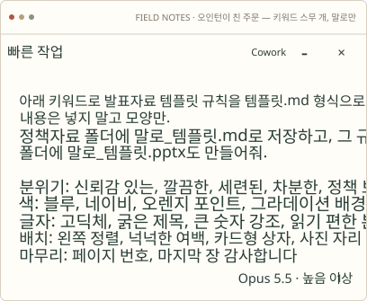
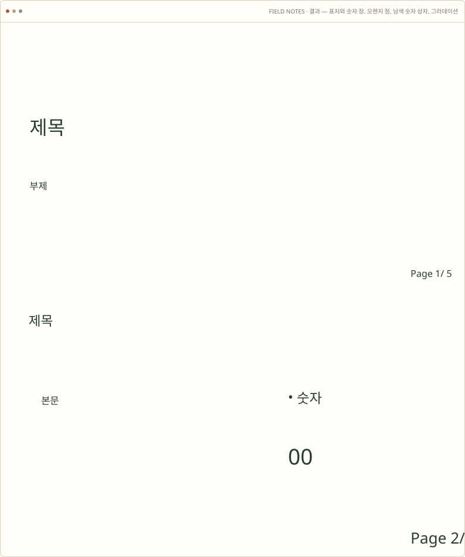
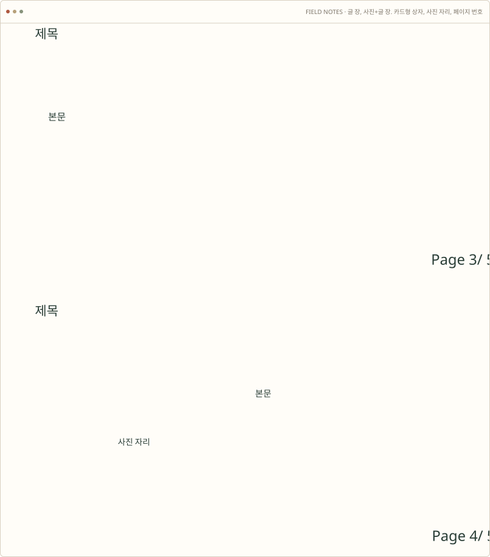
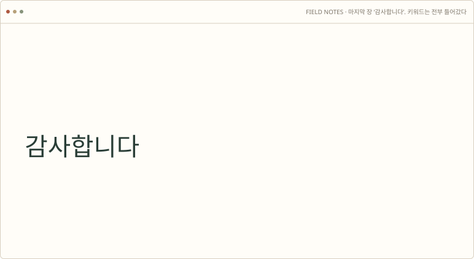
아래 키워드로 발표자료 템플릿 규칙을 템플릿.md 형식으로 써줘. 내용은 넣지 말고 모양만. 정책자료 폴더에 말로_템플릿.md로 저장하고, 그 규칙대로 결과 폴더에 말로_템플릿.pptx도 만들어줘. 분위기: 신뢰감 있는, 깔끔한, 세련된, 차분한, 정책 보고서 느낌 색: 블루, 네이비, 오렌지 포인트, 그라데이션 배경, 밝은 톤 글자: 고딕체, 굵은 제목, 큰 숫자 강조, 읽기 편한 본문 배치: 왼쪽 정렬, 넉넉한 여백, 카드형 상자, 사진 자리 마무리: 페이지 번호, 마지막 장 감사합니다
결과가 나왔다. 오인턴이 고개를 갸웃한다.
“깔끔하고 좋긴한데... 솔직히 너무 심플하지 않아?
내가 생각하는 디테일을 어떻게 살리지?”
페어리가 결과 화면 앞으로 날아온다.
“클로드는 말을 다 들었어요. 스무 개 전부 들어갔잖아요.
그런데 ‘세련된’ ‘블루’ 같은 말엔 정답이 없어서, 제일 무난한 그림으로 채운 거예요. 용사님 머릿속 디테일은 말에 실려 오지 않았어요.”
실패가 아니다. 시종이 못한 게 아니라, 말은 사람마다 떠올리는 그림이 다르다.
그래서 다음은 파일이다.
“말로 안 되면, 보여주면 돼요.
가장 상상이랑 비슷한 슬라이드 파일 하나 가져오실래요?”
숲 여기저기 나무마다 네모난 템플릿이 매달려 있다.
“이 숲엔 템플릿 나무가 여기저기 있어요.
무료 공유 나무, 기관 서식 나무… 다 템플릿이 열려요.”
“마음에 드는 템플릿 하나 따서, 이름에 ‘템플릿’이 들어가게 폴더에 넣으면 돼요.
그럼 클로드가 템플릿의 서식에 콘티를 녹여내요.”
상상과 가장 비슷한 템플릿 파일(pptx) 하나 — 무료 공유 템플릿이나 기관 서식. 내용이 빈 틀이어야 한다. 정책자료 폴더(결과 폴더 말고, 규칙.md가 있는 그 폴더)에 넣는다. 이름에 ‘템플릿’이나 ‘template’이 들어 있으면 그대로 두고, 없으면 이름 끝에 _템플릿을 붙인다.
* 예전에 잘 만든 발표자료를 사용할 거라면 미리 AI에게 ‘이것을 템플릿 형식으로 고치고, 이름을 템플릿이라 저장해줘’라 명령해서 템플릿 ppt를 받아놔야 한다.
콘티.md 때와 같다. 메모장 → 새 Markdown 탭 → 주문서 붙여 넣기 → 정책자료 폴더에 템플릿_시안만들기.md로 저장. 첫 줄이 ‘# 템플릿_시안만들기’라 저장 이름 칸이 알아서 채워진다.
새 대화에서 친다. 콘티 파일 이름은 결과 폴더에 있는 이름을 날짜까지 그대로. 처음 부를 땐 이 컴퓨터에 없는 글꼴도 알려 준다. 그림을 찾고 만드느라 시간이 걸린다.
호출하고 나서 무슨 일이 일어났나?
콘티가 템플릿의 서식을 입었다. 시안1이다.
색도 글꼴도 템플릿 그대로여야 하고, 글자는 콘티의 글자여야 한다. 틀린 곳이 보이면 파워포인트에서 고치지 않는다 — 적어 뒀다가 다음 칸에서 말한다.
* 참고 자료 장의 링크가 눌리지 않으면, 그 장의 글을 복사해 AI에게 ‘링크만 추출해서 전부 열어줘’라고 시킨다. 열린 글의 제목·날짜가 참고 자료와 맞는지 내 눈으로 확인한다.
템플릿 파일과 나란히 보니, 어떤가?
장 하나를 골라 콘티와 대 보니,
글자가 콘티 그대로인가?
템플릿에 칸이 여럿인 장(두 칸·표·카드)이 있었다면,
그 장들도 쓰였나?
장마다 그림이 따로따로 들어갔나?
맨 마지막 장을 보니,
캡처·그림의 출처와 링크가 정리돼 있나?
참고 자료의 링크를 열어 보니,
실제로 있는 글인가?
시안1을 봤다. 틀린 곳은 적어 뒀다 — 고치는 건 다음 칸, 말로.
적어 둔 곳을 대화창에 말한다. 이번만 고칠 건 ‘이번만’, 앞으로도 지킬 건 ‘다음에도 지켜’를 붙인다. 예: “본문이 넘치면 장을 나눠줘. 다음에도 지켜.” 시종이 시안2를 만들고, ‘다음에도’는 템플릿_시안만들기.md 맨 아래 ‘내 수정 규칙’에 한 줄로 적는다.
말하고 나니?
3막 절반 완료. 모양은 템플릿이, 글자는 콘티가, 고칠 점은 내 말이 정했다.
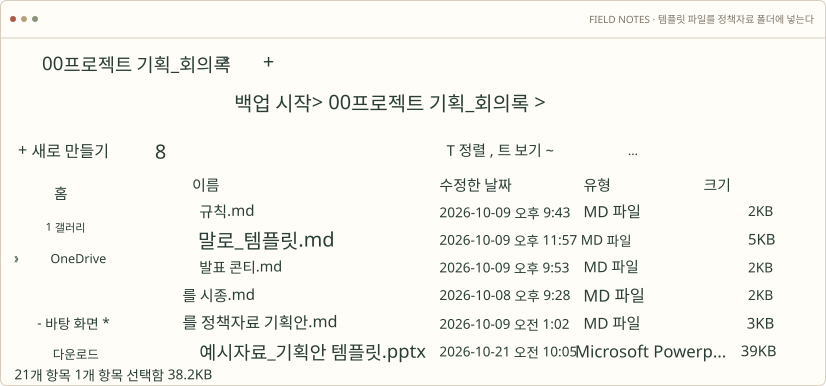
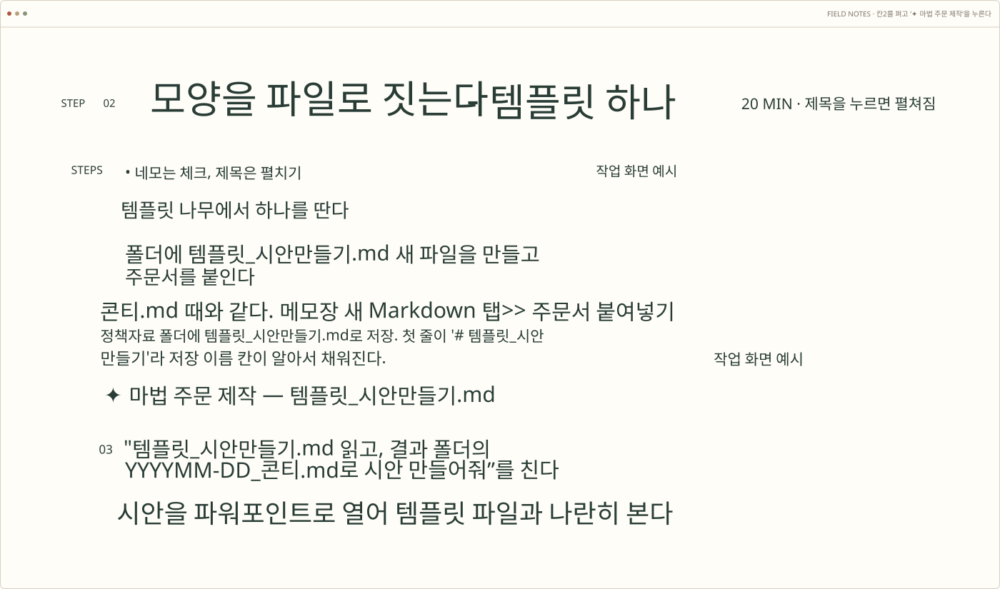
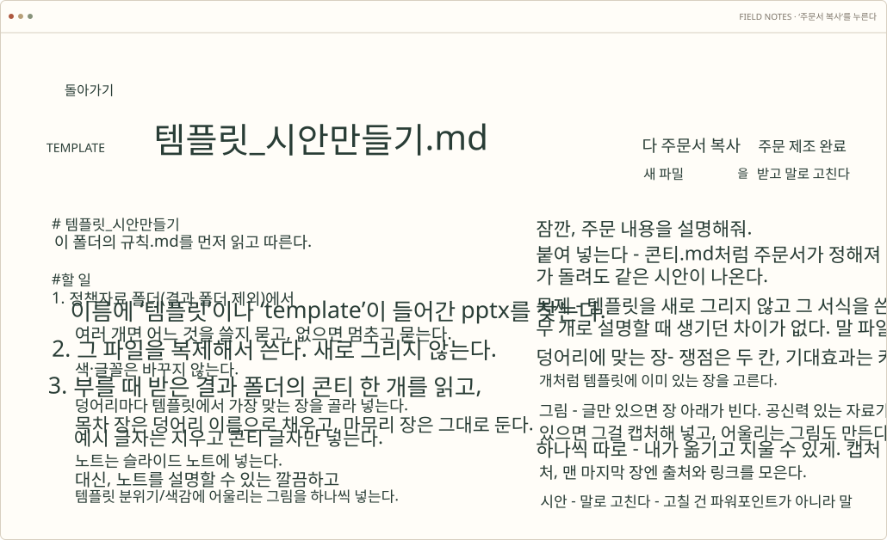
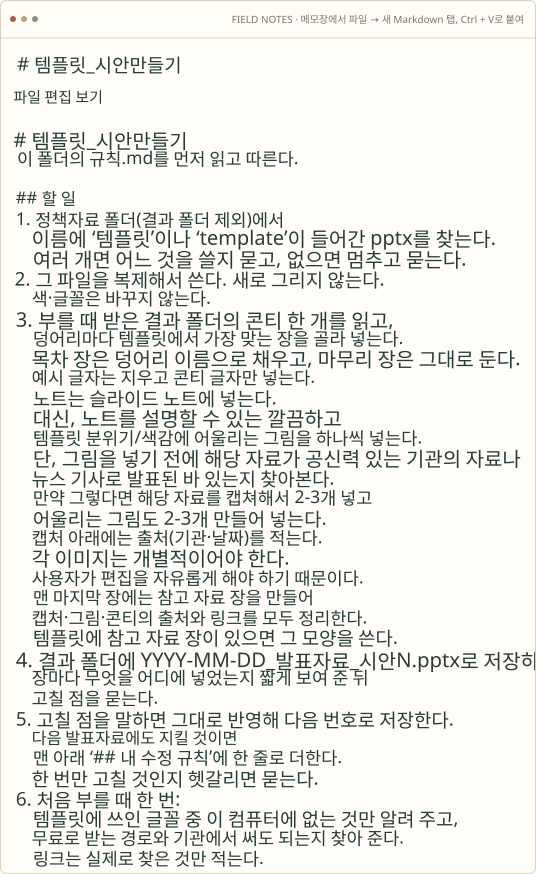
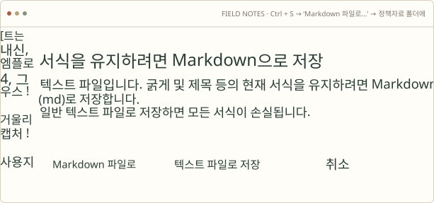
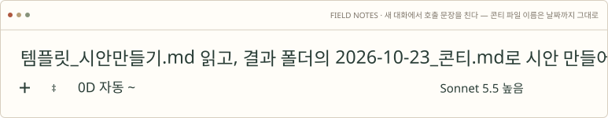
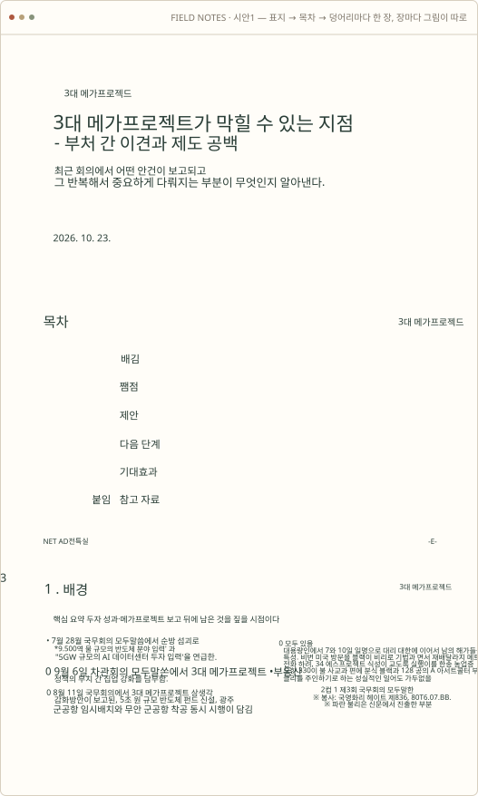
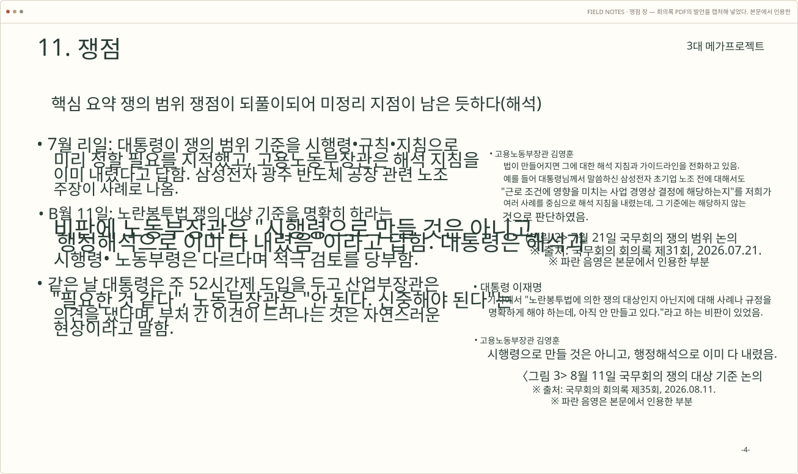
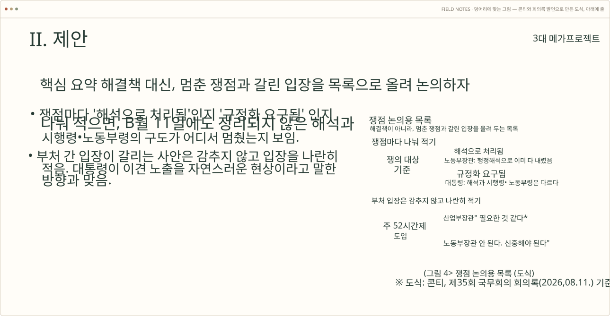
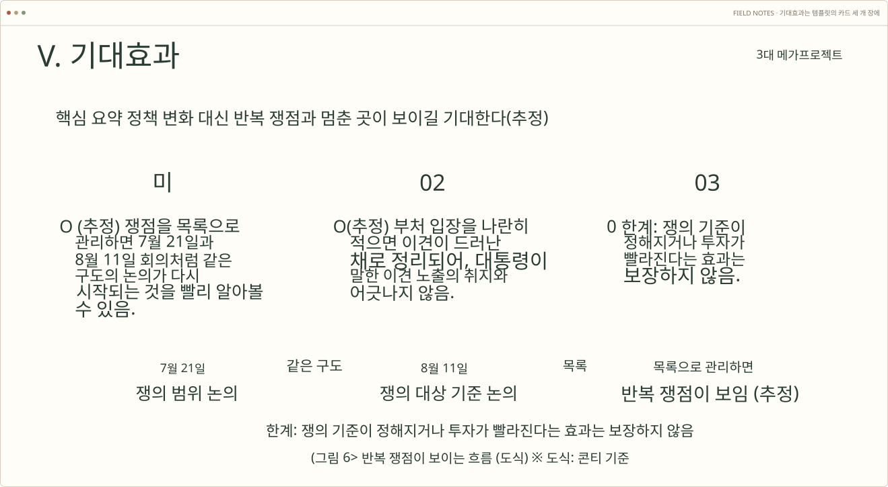
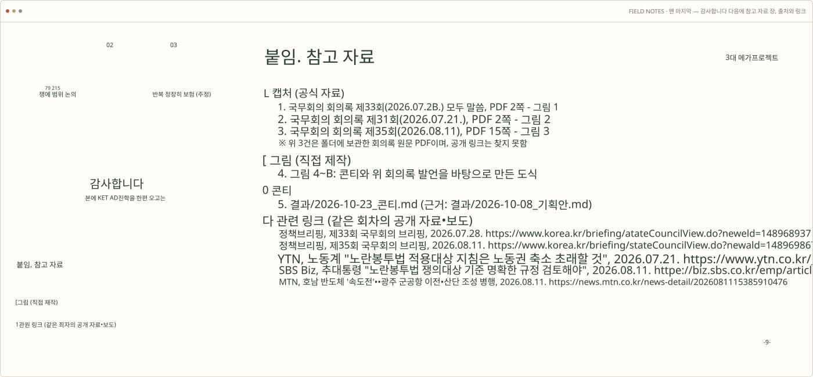
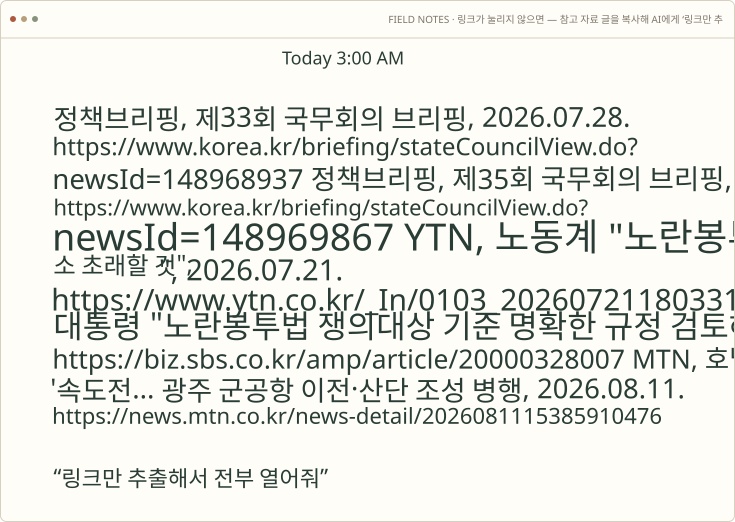
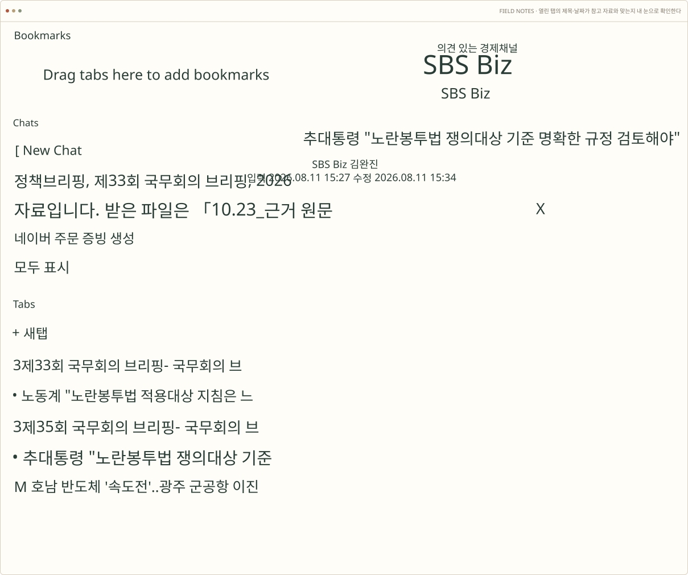
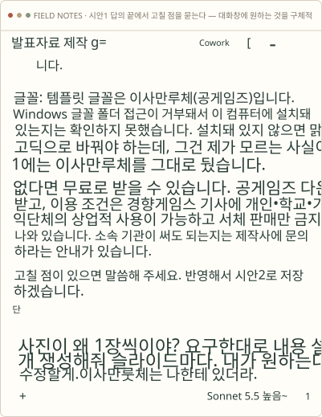
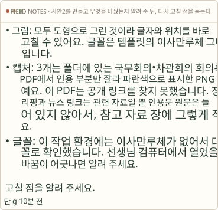
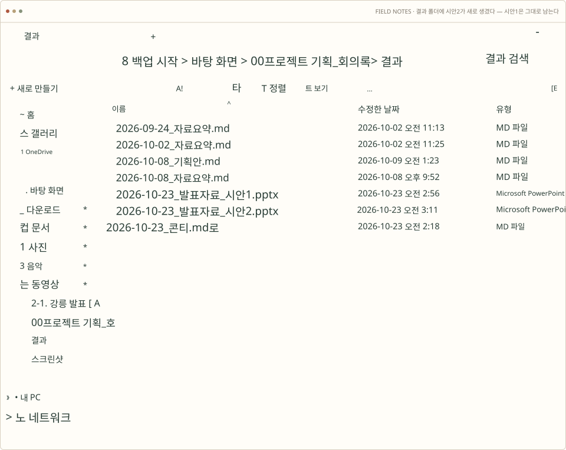
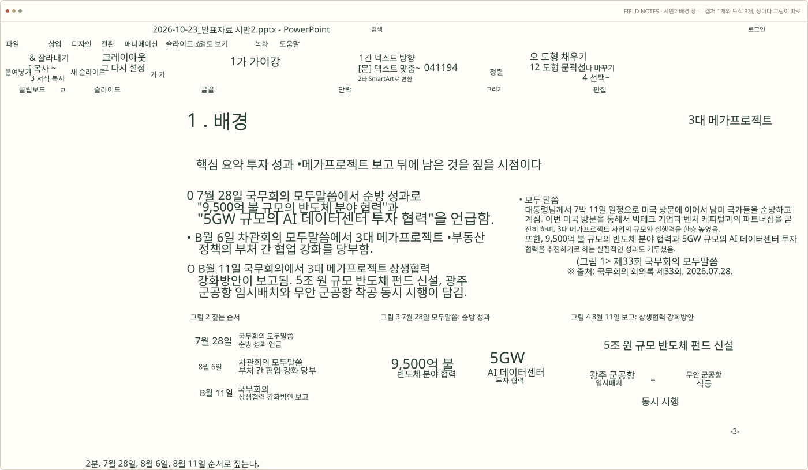
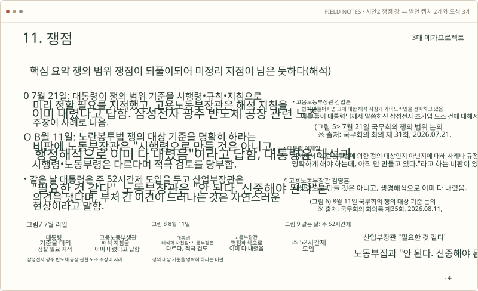
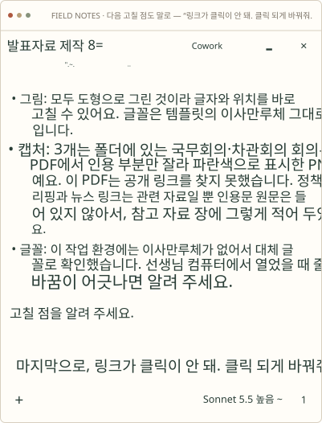
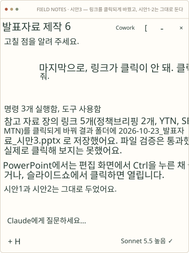
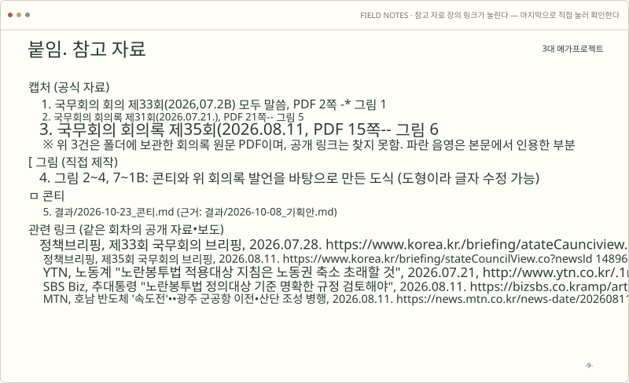
템플릿의 서식을 입은 발표자료가 결과 폴더에 떨어진다.
“…내 콘티가 템플릿 서식 그대로 들어갔어.
말로 스무 개를 칠 땐 그렇게 안 맞더니.”
오인턴이 시안을 넘겨 본다. 장마다 그림이 한두 장씩이다.
“근데 그림은 왜 장마다 한두 장뿐이야?
주문엔 2-3개씩 넣으라고 했는데.”
페어리가 시안 위를 한 바퀴 돈다.
“더 생성하는 게 무의미해서 굳이 만들지 않은 것 같아요.
만약 원하는 게 있으면 수정할 때 구체적으로 지시하면 돼요.”
① 어디를, 어떻게 — 장 이름과 바라는 결과를 같이 말한다.“쟁점 장에 발언 캡처 2개, 도식 2개 더 넣어줘”
② 숫자로 — ‘더 많이’ ‘예쁘게’ 대신 개수·크기·줄 수로.“그림은 장마다 2-3개”
③ 이유를 붙여서 — 이유를 알면 비슷한 곳까지 알아서 맞춘다.“내가 편집해야 하니까 그림은 하나씩 따로”
④ 내가 아는 건 알려 준다 — 시종이 확인 못 한 걸 내가 알면 한 줄로.“이사만루체는 나한테 있다”
⑤ 이번만? 다음에도? — 계속 지킬 건 ‘다음에도 지켜’를 붙인다. 템플릿_시안만들기.md에 쌓인다.“링크는 클릭되게. 다음에도 지켜”
⑥ 파워포인트에서 고치지 않는다 — 시안은 번호로 남는다. 앞 시안이 나았으면 되돌리라고 말한다.“시안2로 돌아가서 표지만 바꿔줘”
⑦ 확인은 내 눈으로 — 링크는 눌러 보고, 숫자는 원문과 대 본다.“링크만 추출해서 전부 열어줘”
페어리가 오인턴 쪽으로 돌아선다.
“용사님이 지은 템플릿_시안만들기.md는 그 모양을 어떻게 쓰라고 시킬지 시종에게 알려주는 주문서예요.”
▼오인턴이 오늘 나온 둘을 나란히 본다. 말로 지은 틀, 템플릿 파일로 지은 발표자료.
“말보다 파일.
그럼 이제 내가 할 일은 고르는 거네.”
숲에 바람이 분다. 나무에 매달린 템플릿들이 흔들린다.
“맞아요. 그리고 오늘 용사님 손으로 고친 파일은 하나도 없어요.
전부 말로 시켰죠. 그게 다음 주에 제일 크게 쓰여요.”
# 템플릿_시안만들기 이 폴더의 규칙.md를 먼저 읽고 따른다. ## 할 일 1. 정책자료 폴더(결과 폴더 제외)에서 이름에 ‘템플릿’이나 ‘template’이 들어간 pptx를 찾는다. 여러 개면 어느 것을 쓸지 묻고, 없으면 멈추고 묻는다. 2. 그 파일을 복제해서 쓴다. 새로 그리지 않는다. 색·글꼴은 바꾸지 않는다. 3. 부를 때 받은 결과 폴더의 콘티 한 개를 읽고, 덩어리마다 템플릿에서 가장 맞는 장을 골라 넣는다. 목차 장은 덩어리 이름으로 채우고, 마무리 장은 그대로 둔다. 예시 글자는 지우고 콘티 글자만 넣는다. 노트는 슬라이드 노트에 넣는다. 대신, 노트를 설명할 수 있는 깔끔하고 템플릿 분위기/색감에 어울리는 그림을 하나씩 넣는다. 단, 그림을 넣기 전에 해당 자료가 공신력 있는 기관의 자료나 뉴스 기사로 발표된 바 있는지 찾아본다. 만약 그렇다면 해당 자료를 캡쳐해서 2-3개 넣고 어울리는 그림도 2-3개 만들어 넣는다. 캡처 아래에는 출처(기관·날짜)를 적는다. 각 이미지는 개별적이어야 한다. 사용자가 편집을 자유롭게 해야 하기 때문이다. 맨 마지막 장에는 참고 자료 장을 만들어 캡처·그림·콘티의 출처와 링크를 모두 정리한다. 템플릿에 참고 자료 장이 있으면 그 모양을 쓴다. 4. 결과 폴더에 YYYY-MM-DD_발표자료_시안N.pptx로 저장하고, 장마다 무엇을 어디에 넣었는지 짧게 보여 준 뒤 고칠 점을 묻는다. 5. 고칠 점을 말하면 그대로 반영해 다음 번호로 저장한다. 다음 발표자료에도 지킬 것이면 맨 아래 ‘## 내 수정 규칙’에 한 줄로 더한다. 한 번만 고칠 것인지 헷갈리면 묻는다. 6. 처음 부를 때 한 번: 템플릿에 쓰인 글꼴 중 이 컴퓨터에 없는 것만 알려 주고, 무료로 받는 경로와 기관에서 써도 되는지 찾아 준다. 링크는 실제로 찾은 것만 적는다. ## 다 됐다는 기준 - 콘티의 모든 장이 들어갔다. 예시 글자가 남지 않았다. - 템플릿과 색·글꼴이 같다. - 그림은 하나씩 따로 들어가 있다. 캡처마다 출처가 있다. - 맨 마지막 참고 자료 장에 출처와 링크가 모두 있다. - 지정한 글꼴이 이 컴퓨터에 없으면 맑은 고딕을 쓴다. ## 내 수정 규칙
붙여 넣는다 — 콘티.md처럼 주문서가 정해져 있어야 누가 돌려도 같은 시안이 나온다.
복제 — 템플릿을 새로 그리지 않고 그 서식을 쓴다. 말 스무 개로 설명할 때 생기던 차이가 없다. 말 < 파일.
덩어리에 맞는 장 — 쟁점은 두 칸, 기대효과는 카드 세 개처럼 템플릿에 이미 있는 장을 고른다.
그림 — 글만 있으면 장 아래가 빈다. 공신력 있는 자료가 있으면 그걸 캡처해 넣고, 어울리는 그림도 만든다. 그림은 하나씩 따로 — 내가 옮기고 지울 수 있게. 캡처 아래엔 출처, 맨 마지막 장엔 출처와 링크를 모은다.
시안 → 말로 고친다 — 고칠 건 파워포인트가 아니라 말로. ‘다음에도’ 지킬 건 맨 아래 ‘내 수정 규칙’에 쌓여, 다음 시안부터는 처음부터 맞게 나온다.
맑은 고딕 — 그 글꼴이 없는 컴퓨터에서도 조용히 깨지지 않게 바뀔 글꼴을 정해 두는 한 줄.
빈 Markdown 탭에 붙여 넣고 정책자료 폴더에 저장한다.
콘티엔 모양이 없고, 템플릿엔 내용이 없다. 모양은 말보다 파일이 정확했다. 둘을 합쳐 시안이 나왔고, 고칠 점은 말로 고쳤다.
NEXT · [스토리]
레퍼런스로 완내스 템플릿 만들기
참고 템플릿·사진과 내 발표 상황을 주고
내 템플릿을 짓는다
만든 템플릿은 루프에 꽂기만 한다
빛 두 개가 하나로 겹친다. 글자에 색이 입혀졌다.
“오늘 둘이 합쳐졌어요. 이게 시안이에요.
다음 주엔 용사님 템플릿을 지어요. 그때 진짜 용사님 발표자료가 나와요.”
TO BE CONTINUED · WEEK 07
▼